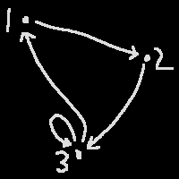

1 logic and proofs1.1 propositions and connectivesA proposition is a declarative sentence that is true or false. For example, these are propositions:
and these are not:
We write "true" as \(\mathrm T\) and "false" as \(\mathrm F\).
(A preposition is a word like "in" or "above" or "with".)
The negation of a proposition \(p\) is \(\neg p\) "not \(p\)", which has the opposite truth value as \(p\).
We'll talk about why the middle one isn't "everyone doesn't like this class" in a bit.
If you negate \(p\) twice, i.e. \(\neg\neg p\), you get \(p\) again.
The conjunction of \(p\) and \(q\), \(p\land q\) "\(p\) and \(q\)", is true only when \(p\) and \(q\) are both true, and false otherwise. Their disjunction, \(p\lor q\) "\(p\) or \(q\)", is false only when they're both false, and true otherwise (i.e. it's true whenever at least one of them is true). Importantly, the disjunction represents "inclusive or" because they can both be true, not "exclusive or" which is what "or" does in English a lot of the time ("do you want coffee or tea?" "both" "no we don't do that here").
A contradiction is always false no matter what input you give it, like \(p\land\neg p\) (\(p\) can't be both true and false). A tautology is always true no matter what input you give it, like \(p\lor\neg p\) (\(p\) is always either true or false).
\(\land\) and \(\lor\) are commutative and associative. DeMorgan's laws say that \(\neg(p\land q)\equiv\neg p\lor\neg q\) and \(\neg(p\lor q)\equiv\neg p\land\neg q\).
The reason \(\neg p\land q\equiv(\neg p)\land q\not\equiv\neg(p\land q)\) is because \(\neg\) has "lower scope" or "higher precedence" than \(\lor\). Similarly, \(\land\) has lower scope than \(\lor\). This is what keeps these formulas unambiguous. If you see something scary like
\[ p\land\neg q\lor\neg r\land s \]
you can figure out it's the same as
\[ \Big(p\land(\neg q)\Big)\lor\Big((\neg r)\land s\Big) \]
| \(p\) | \(q\) | \(\neg p\) | \(p\land q\) | \(p\lor q\) |
|---|---|---|---|---|
| T | T | F | T | T |
| T | F | F | F | T |
| F | T | T | F | T |
| F | F | T | F | F |
1.2 conditionals The conditional \(p\Rightarrow q\) is false only when \(p\land\neg q\). Therefore it is true
whenever, and equivalent to, \(\neg p\lor q\). We can read the conditional as "if \(p\) then \(q\)" or "\(q\) if
\(p\)" or "\(p\) implies \(q\)". Again this is not always how "if" works in English. If I text Kali and say hey
im in the library if u wanna study
I might be in the library regardless of whether or not they want to come
study with me. (💜)
The converse of \(p\Rightarrow q\) is \(q\Rightarrow p\), which is not always going to have the same truth value. "If it rained, the ground is wet" does not imply "if the ground is wet, it rained": maybe there was a sprinkler or something; "if a shape is a square, it has 4 sides" does not imply "if a shape has 4 sides, it is a square", etc.
The inverse of \(p\Rightarrow q\) is \(\neg p\Rightarrow\neg q\), which also is not always equivalent as the original. "If it rained, the ground is wet" does not imply "if it didn't rain, the ground is dry": maybe there was, um, a sprinkler, or something, idk
The contrapositive of \(p\Rightarrow q\) is \(\neg q\Rightarrow\neg p\), which is always equivalent to the original. "If it rained, the ground is wet" does imply "if the ground is dry, it didn't rain"; "if a shape is a square, it has 4 sides" does imply "if a shape doesn't have 4 sides, it isn't a square".
The biconditional \(p\Leftrightarrow q\) is true whenever \(p\) and \(q\) have the same truth value and false otherwise. We read this "\(p\) if and only if \(q\)" or "\(p\) iff \(q\)". These are commonly seen as definitions:
Two lines \(y=mx+b\) and \(y=nx+c\) are perpendicular iff \(mn=-1\).
The biconditional is called that because it's two conditionals: \((p\Rightarrow q)\land(q\Rightarrow p)\).
\(\Leftrightarrow\) has higher scope than \(\Rightarrow\) which has higher scope than \(\lor\).
\(\Leftrightarrow\) is commutative and associative, but not chaining: \(p\Leftrightarrow q\Leftrightarrow r\) does not mean \((p\Leftrightarrow q)\land(q\Leftrightarrow r)\).
\(\Rightarrow\) is right-associative: \(p\Rightarrow q\Rightarrow r\) means \(p\Rightarrow(q\Rightarrow r)\). Compare exponents: \(2^{3^4}=2^{\left(3^4\right)}\).
| \(p\) | \(q\) | \(p\Rightarrow q\) | \(p\Leftrightarrow q\) |
|---|---|---|---|
| T | T | T | T |
| T | F | F | F |
| F | T | T | F |
| F | F | T | T |
1.3 quantifiersA predicate is a sentence with free variables, like if I said "\(x\geq3\)" without telling you what \(x\) is. This isn't a proposition because we can't determine if it's true or false. Because this predicate has the variable \(x\) we could call it \(p(x)\). The truth set of \(p\) is the set of \(x\) for which \(p(x)\) is true. To restrict what kinds of \(x\) we can give \(p\) (so we don't say silly things like "\(\text{meow}\geq3\)") we need a universe of discourse. For \(p\) maybe our universe is \(\mathbf R\), the reals.
Two predicates \(p(x, ...)\) and \(q(x, ...)\) are equivalent if they have the same truth set.
[In formal semantics land they don't like coming up with all these letters for predicates so they made the notation \(\lambda x\mathpunct. x\geq3\) for anonymous predicates. You could use this to make a function that gives you another function, like \(\operatorname{pow}(p)=\lambda x\mathpunct. x^p\) which you could use as e.g. \(\operatorname{pow}(3)(4)=4^3\).]
Some sentences, such as "there exist an animal with exactly 54 legs", require us to go up to every animal and
ask it hey animal do u have exactly 54 legs
, and then we can stop when/if any of them says yea i do
:3
. To express this we need the existential quantifier \(\exists\). We could write our sentence
as
\[ \exists a\mathpunct. a\text{ has exactly 54 legs} \]
but then we might accidentally ask some people (no i have 2
) or chairs (no i have 4
) or
integers (what the fuck is a leg
), which would be a waste of time. We can fix this either by writing
\[ \exists a\mathpunct. a\text{ is an animal}\land a\text{ has exactly 54 legs} \]
or by restricting the domain of \(a\) to members of some universe \(A\) that only contains animals:
\[ \exists a\in A\mathpunct. a\text{ has exactly 54 legs} \]
This will be true whenever the truth set of the predicate is not empty. The quantifier binds the variable \(a\). This can be read as "there exists an \(a\in A\) such that...".
Similarly to check whether or not "everyone likes math 251" we need to go up to everyone in the universe (of
people who are taking math 251) and ask them hey do u like math 251
. This time, if anyone says no
,
we can stop because we know the sentence is false. We write this with the universal quantifier
as
\[ \forall s\in M\mathpunct. s\text{ likes math 251} \]
This will only be true when the truth set is the entire universe. It can be read as "for all \(s\in M\), ...".
If a predicate with a bound variable contains any connectives besides \(\neg\), it needs parentheses. To say "all integers are even or odd" we cannot write
\[ \forall \textcolor{yellow}z\in\mathbf Z\mathpunct. \textcolor{yellow}z\text{ is even}\lor \textcolor{#f99}z\text{ is odd} \]
because the second \(z\) isn't bound by anything. Instead we need to write
\[ \forall \textcolor{lime}z\in\mathbf Z\mathpunct. (\textcolor{lime}z\text{ is even}\lor \textcolor{lime}z\text{ is odd}) \]
But
And because \(p\Leftrightarrow\neg\neg p\)
The last quantifier is the unique existential quantifier. If we want to make the much stronger claim that "there exists exactly one animal with exactly 54 legs", we can write
\[ \exists!a\in A\mathpunct. a\text{ has exactly 54 legs} \]
This is true only when the truth set has exactly one element. This is equivalent to saying
\[ \forall a, b\in A\mathpunct. (a\text{ has exactly 54 legs}\land b\text{ has exactly 54 legs}\Rightarrow a=b) \]
1.4 proofs (1)Things you can do in proofs (inexhaustive):
Direct proof of \(p\Rightarrow q\)
Proof.
Assume \(p\).
\(\vdots\)
Therefore, \(q\).
\(p\Rightarrow q\).
A proof by exhaustion splits the problem into different cases like \(x=1\) or \(x\leq\pi\).
1.5 proofs (2)Proof of \(p\Rightarrow q\) by contraposition
Proof.
Assume \(\neg q\).
\(\vdots\)
Therefore, \(\neg p\).
\(\neg q\Rightarrow\neg p\).
\(p\Rightarrow q\).
Proof of \(p\) by contradiction
Proof.
Suppose \(\neg p\).
\(\vdots\)
Therefore, \(q\).
\(\vdots\)
Therefore, \(\neg q\).
[\(q\land\neg q\) is a contradiction.]
\(p\).
Two-part proof of \(p\Leftrightarrow q\)
Proof.
\(\vdots\)
Therefore, \(p\Rightarrow q\).
\(\vdots\)
Therefore, \(q\Rightarrow p\).
\(p\Leftrightarrow q\).
Biconditional proof of \(p\Leftrightarrow q\)
Proof.
\(p\)
iff \(\alpha\)
iff \(\beta\)
\(\vdots\)
iff \(q\).
1.6 proofs involving quantifiersDirect proof of \(\forall x\mathpunct. p(x)\)
Proof.
Let \(x\) be an arbitrary object in the universe.
\(\vdots\)
\(p(x)\).
Therefore, \(\forall x\mathpunct. p(x)\).
Contradiction can be used here too because \(\neg\forall x\mathpunct. p(x)\Leftrightarrow\exists x\mathpunct. \neg p(x)\).
Constructive proof of \(\exists x\mathpunct. p(x)\)
Proof.
Let \(x\) be [some specific value/description in the universe].
\(\vdots\)
\(p(x)\).
Therefore, \(\exists x\mathpunct. p(x)\).
etc etc etc
2 sets and induction2.1 setsA set is a bunch of elements whatever you know this already.
We can define a set using the fact that there is some property all the elements satisfy. If every element satisfies \(p\), we can write the set as \(\set{x:p(x)}\). The part before the \(:\) can also be more complicated, like for \(3\mathbf Z=\set{3z:z\in\mathbf Z}\) or \(E=\set{n\in\mathbf N:2\mid n}\)
The empty set \(\emptyset=\set{ }\) is the set with no elements.
\(A\) is a subset of \(B\) (which we write as \(A\subseteq B\)) if \(\forall a\in A\mathpunct. a\in B\). To prove \(A\subseteq B\) we can just prove its definition and use 1.6. If \(A\) is not a subset of \(B\) we write \(A\not\subseteq B\).
Two sets are equal iff they are subsets of each other (because then neither can contain any elements the other doesn't).
\(A\) is a proper subset (which we write as \(A\subset B\)) of \(B\) if \(A\subseteq B\) but \(A\neq B\). If \(A\) is not a proper subset of \(B\) (but also not a subset, as otherwise we could write \(A=B\)), we write \(A\not\subset B\).
The empty set is a subset of every set \(A\), because it has no elements that aren't in \(A\) (because it has no elements at all!).
The power set of \(A\), \(\mathcal P(A)\), is the set of all of \(A\)'s subsets. Regardless of what \(A\) is,
If \(A\) has \(n\) elements, \(\mathcal P(A)\) has \(2^n\) elements, which is why sometimes the power set is just written as \(2^A\).
2.2 set operationsIf \(A\) and \(B\) are sets,
\(\cap\) and \(\cup\) are commutative and associative and distributive.
An (ordered) \(n\)-tuple is a container of \(n\) things, \((a_1, a_2, ..., a_n)\). Ordered pairs for coordinates are examples of tuples. Two tuples \(a\) and \(b\) are equal if they have the same length \(n\) and \(\forall i\in[0, n]\cup\mathbf N\mathpunct. a_i=b_i\). (This is where the "ordered" comes from.)
We can construct a set of pairs by using the cross product \(A\times B\) of two sets. The cross product is defined as \(\set{(a, b):a\in A\land b\in B}\). \(\times\) is not commutative: \(A\times B\neq B\times A\).
The complement of \(A\) wrt a universe \(U\) is \(U\setminus A\). We write it as \(A^\complement\) or \(A'\).
(A compliment of \(A\) would be something like "woa hi \(A\) you look cute today".)
2.3 set familiesA family is a set of sets. Families are given cursive capital letters as names, like \(\mathscr A\).
The union over \(\mathcal A\) is \(\bigcup_{\textcolor{green}A\in\mathscr A}\textcolor{green}A=\set{x:\exists\textcolor{SkyBlue}A\in\mathscr A\mathpunct. x\in\textcolor{SkyBlue}A}\). Note that the two regular \(A\)s on each side of that are doing different things. \(\textcolor{green}{\text{One}}\) is acting as a dummy variable for the \(\bigcup\), \(\textcolor{SkyBlue}{\text{the other}}\) is bound by the \(\exists\).
Likewise the intersection over \(\mathcal A\) is \(\bigcup_{A\in\mathscr A}A=\set{x:\forall A\in\mathscr A\mathpunct. x\in A}\).
2.4 inductionLet \(S\) be a subset of \(\mathbf N\) such that
Then \(S=\mathbf N\).
A set is inductive if it only meets requirement 2. For example \(\set{5, 6, 7, ...}\) is inductive.
Proof.
1. verify the property \(p(n)\) for \(n=1\)
2. magically assume \(p(n)\) is true for all \(n\leq k\)
3. prove \(p(k+1)\)
Therefore, \(\forall n\in\mathbf N\mathpunct. p(n)\).
2.6 countingThe cardinality of a set \(A\), which is written \(\operatorname{card}A\) or \(|A|\) or \(\#A\) or \(\bar{\bar A}\), is the number of elements it has.
The sum rule (for two sets)
If \(|A|=m\) and \(|B|=n\), \(|A\cup B|=m+n-|A\cap B|\).
Inclusion-exclusion principle
When finding the cardinality of the union of the \(n\) sets in a
family \(\mathscr A\), you include all the members of each set in \(\mathscr A\), exclude the
pairwise intersections, include the 3tuplewise intersections, etc.
\[ \left|\bigcup_{i=1}^n A_i\right|=\sum_{j=1}^n\left((-1)^{j+1}\sum_{|S|=j}\left|\bigcap_{k\in S}A_k\right|\right)\quad\text{with each }S\subseteq\set{k\in\mathbf N:k\leq n} \]
The product rule
The cardinality of the cross product \(A_1\times A_2\times\cdots\times A_n\) is
\(\prod_{i=1}^n|A_i|\).
A permutation of a set is an arrangement of its elements in a specific order. The number of permutations of a set with \(n\) elements is \(n!\) "\(n\) factorial" \(=\prod_{i=1}^ni\).
[The factorial can be extended to the complex numbers via \(x!=\Gamma(x+1)\) using the gamma function \(\Gamma(z)=\int_0^\infty t^{z-1}e^{-t}\,\mathrm dt\) which is defined for all \(z\in\mathbf C\) besides negative integers. \(\frac12!=\Gamma(\frac32)=\frac{\sqrt\pi}2\) for example.]
If \(r\) is an integer on \([0, n]\), the number of permutations of any \(r\) distinct objects out of a set of \(n\) is \(\frac{n!}{(n-r)!}\).
A conmbination of \(n\) elements taken \(r\) at a time is a subset that has \(r\) elements made from a set with \(n\) elements. Because it is a subset, order does not matter. The number of combinations is the binomial \(n\choose r\) "\(n\) choose \(r\)" \(=\frac{n!}{r!(n-r)!}\).
The chairperson identity: \(r{n\choose r}=n{n-1\choose r-1}\)
The binomial is useful for expanding \((a+b)^n=\sum_{r=0}^n{n\choose r}a^rb^{n-r}\).
3 relations3.1 what is relation ?A relation from \(A\) to \(B\) is a subset \(R\) of \(A\times B\). A relation from \(A\) to \(A\) is called a relation on \(A\). If \((a, b)\in R\) we say \(a\) is \(R\)-related to \(b\) and write \(a\mathrel Rb\). If \((a, b)\not\in R\) we write \(a\mathrel{\cancel R}b\).
The identity relation on \(A\) is the set \(I_A=\set{(a, a):a\in A}\).
The domain of \(R\) is the set \(\operatorname{Dom}R=\set{x\in A:\exists y\in B\mathpunct. x\mathrel R y}\). The range is the set \(\operatorname{Rng}R=\set{y\in B:\exists x\in A\mathpunct.x\mathrel R y}\). I am sad that they didn't decide to call it \(\operatorname{Sub}R\) instead.
The inverse of a relation \(R\) is the relation \(R^{-1}=\set{(y, x):x\mathrel Ry}\).
The composition of \(R\) and \(S\) is the relation \(S\circ R\) from \(A\) to \(C\) defined by \(\set{(a, c):\exists b\in B\mathpunct. (a\mathrel Rb\land b\mathrel Sc)}\). To reduce confusion I like reading \(S\circ R\) as "\(S\) after \(R\)".
A digraph is a diagram of a relation. Here is a digraph of some relation I made up.

3.2 equivalence relationsConsider some relation \(R\) on \(A\). \(R\) is
The equivalence class of \(x\) mod \(R\) is the set \(\bar x=[x]=x/R=\set{y\in A:x\mathrel Ry}\).
An integer \(x\)\(\equiv y\text{ (mod $m$)}\) if \(m\mid(x-y)\). The set of equivalence classes for congruence modulo \(m\) is \(\mathbf Z_m\). For example \(\mathbf Z_4\) contains the equivalence class \(\bar1\) which has every integer one more than a multiple of four.
4 functions4.1 what is function ?A relation \(f\) is a function from \(A\) to \(B\) if
If \(f\) is in fact a function we write \(f:A\to B\) and say "\(f\) maps \(A\) to \(B\)". The codomain is \(B\) which might be a superset of \(\operatorname{Rng}f\). For example the range of \(f(x)=\cos x\) is \([-1, 1]\) but its codomain could be \(\mathbf R\) since \([-1, 1]\subseteq\mathbf R\).
When \((x, y)\in f\) we can also write \(y=f(x)\) [but not "\(x\mathrel fy\)" even though it's a relation].
To prove two functions \(f\) and \(g\) are equal, we can either use the fact that they're sets and prove that \(f\subseteq g\) and \(g\subseteq f\), or show that \(\operatorname{Dom}f=\operatorname{Dom}g\) and \(\forall x\in\operatorname{Dom}f\mathpunct: f(x)=g(x)\) they map the same inputs to the same outputs.
The identity function on \(A\) is the function \(I_A:A\to A\) defined as \(I_A(x)=x\).
If \(A\subseteq B\) there is also the inclusion function \(i:A\to B\) which is the same thing [i.e. \(\forall x\in A\mathpunct. I_A(x)=i(x)=x\)].
If there is some universe \(U\), then for all \(A\subseteq U\) the characteristic function of \(A\) \(\chi_A:U\to\{0, 1\}\) is
\[ \forall x\in U\mathpunct. \chi_A(x)=\begin{cases} 1&\text{if }x\in A\\ 0&\text{if }x\not\in A \end{cases} \]
The floor function \(\lfloor\mathord\cdot\rfloor:\mathbf R\to\mathbf Z\) maps each real number \(x\) to its integer part, i.e. the greatest integer \(n\leq x\). \(\lfloor x\rfloor\) is like "always round down". Similarly there's the ceiling \(\lceil x\rceil=\lfloor x\rfloor+1\).
If \(R\) is an equivalence relation on \(A\), the canonical map \(f:A\to A/R\) maps each \(a\in A\) to its equivalence class \(\bar a\).
A function is not well defined if it isn't actually a function at all (e.g. if it fails the vertical line test).
4.2 making new functionsThe inverse of a function \(f:A\to B\) is the function \(f^{-1}:B\to A\).
The composition of two functions \(f:A\to B\) and \(g:B\to C\) is the relation
\[ g\circ f=\set{(x, z):\exists y\in B\mathpunct. (x, y)\in f\land(y, z)\in g} \]
which is not guaranteed to be a function! When giving \(g\circ f\) an input we can write either \([g\circ f](x)\) or \(g(f(x))\).
Composition is not commutative: if they both even exist, \(g\circ f\) and \(f\circ g\) are not guaranteed to be the same. Composition is associative: \(h\circ(g\circ f)=(h\circ g)\circ f=h\circ g\circ f\).Both of these are consequences of functions being fancy relations.
If \(D\subseteq A\) the restriction of \(f\) to \(D\) is the function \(f|_D=\set{(x, y)\in f:x\in D}\).
A function \(f:A\to B\) is increasing if \(\forall x, y\in A\mathpunct. x<y\Rightarrow f(x)<f(y)\) and decreasing if \(\forall x, y\in A\mathpunct. x>y\Rightarrow f(x)>f(y)\). If \(f\) is increasing or decreasing it is monotonic.
4.3 injective and surjective functionsA function \(f:A\to B\) is surjective or onto \(B\) if \(\operatorname{Rng}f=B\). If \(f\) is a surjection we write \(f:A\twoheadrightarrow B\) [or, if you really like the book, \(f:A\stackrel{\text{onto}}{\to}B\)].
\(f\) is injective or one-to-one if \(\forall x, y\in A\mathpunct: f(x)=f(y)\Rightarrow x=y\) it passes the horizontal line test. If \(f\) is an injection we write \(f:A\hookrightarrow B\) [or, if you really like the book, \(f:A\stackrel{1-1}{\to}B\)].
4.4 inverse functions\(f\) is bijective or a one-to-one correspondence if it is both injective and surjective. Only bijective functions have inverses, but to prove \(f^{-1}\) is a function you only need to show that \(f\) is a function and \(f\circ f^{-1}=I_B\) and \(f^{-1}\circ f=I_A\).
If \(A\) is a nonempty set, a function \(p:A\to A\) is a permutation of \(A\) if it is bijective.